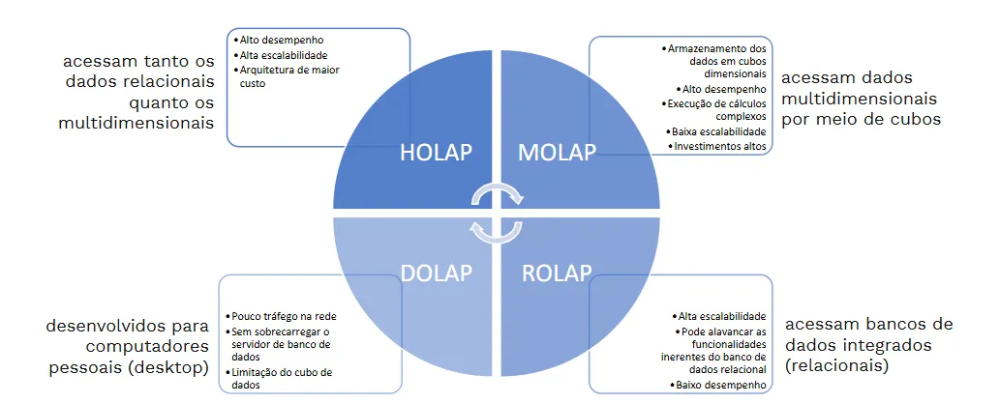
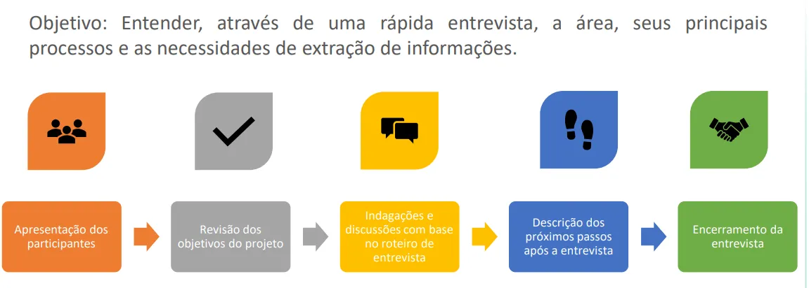
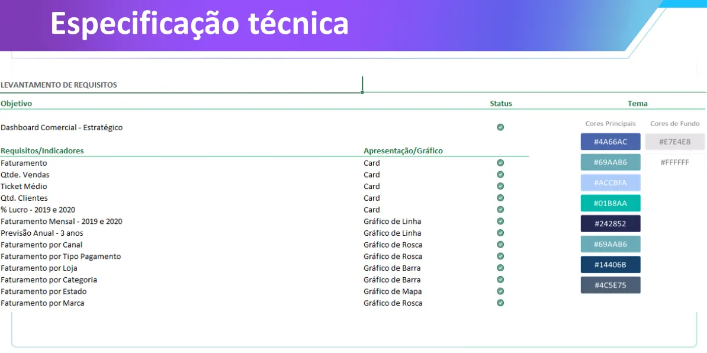

Como dever ser uma arquitetura de projeto usando o OLAP.
Arquitetura de um projeto de PowerBI

Cubo
O que é um Cubo OLAP?
Um cubo OLAP é uma estrutura de dados usada para organizar informações em múltiplas dimensões (como tempo, região, produto, cliente, etc.), permitindo análises rápidas, interativas e flexíveis.
| A ideia é que você possa olhar os dados de diferentes “ângulos” — assim como gira um cubo físico.
Um cubo é criado tendo-se em mente o tipo de consulta que um gerente de projeto pode querer fazer. Ao projetar um cubo é importante levar em conta as prováveis consultas que poderão ser feitas no cubo, porém não se deve perder de vista que existem muitas consultas potenciais que podem surgir. Portanto, o projeto de um cubo deve priorizar a escolha e a organização das dimensões que podem influenciar nas medidas relacionadas à decisão que o usuário deve tomar. A escolha das dimensões é fundamental no projeto de um cubo.
Arquitetura OLAP

3. Tipos de OLAP
O “tipo” de OLAP depende de como e onde os dados ficam armazenados para análise:
MOLAP (Multidimensional OLAP)
- Armazena os dados em cubos multidimensionais pré-calculados.
- Muito rápido para consultas, mas pode ser caro e menos escalável para grandes volumes.
- Exemplo: Microsoft Analysis Services (modo multidimensional), Oracle Essbase.
ROLAP (Relational OLAP)
- Usa bancos relacionais (como BigQuery, Snowflake) para calcular os resultados na hora.
- Mais flexível e escalável, mas pode ser mais lento.
- Exemplo: Tableau conectando direto ao BigQuery.
HOLAP (Hybrid OLAP)
- Combina MOLAP e ROLAP: agregados rápidos no cubo e detalhes no banco relacional.
- Boa performance e flexibilidade.
- Exemplo: Analysis Services no modo híbrido.
DOLAP (Desktop OLAP)
- Cubos armazenados no computador do usuário, permitindo análise offline.
- Muito usado no passado, hoje quase abandonado.
4. Exemplos reais
| Tipo | Onde aparece hoje | Exemplo |
|---|---|---|
| MOLAP | Cubos pré-processados | SAP BW, Oracle Essbase |
| ROLAP | Consulta em DW | Tableau, Looker, Qlik conectados direto ao BigQuery |
| HOLAP | Híbrido | Microsoft SSAS modo híbrido |
| DOLAP | Local/offline | Excel Pivot com cache local (antigo) |
1. O que é navegação multidimensional?
Quando temos dados organizados em dimensões (ex.: Tempo, Local, Produto) e medidas (ex.: Vendas, Quantidade), podemos navegar nesses dados mudando o nível de detalhe ou mudando de perspectiva.
Essa navegação é chamada de operações OLAP e ajuda o usuário a explorar os dados.
2. Tipos de navegação (o que a tabela mostra)
Tipos De Drill

a) Drill Down (Down)
- O que é: Aumenta o nível de detalhe (mais granularidade).
- O que acontece: Você desce na hierarquia da dimensão.
- Exemplo: Estado → Cidade → Bairro.
- Impacto: Mais dados para processar, consultas podem ficar mais pesadas.
- No Power BI: Clicar no botão de “Drill Down” ou no “+” da hierarquia.
b) Drill Up (Up)
- O que é: Reduz o nível de detalhe (menos granularidade).
- O que acontece: Você sobe na hierarquia da dimensão.
- Exemplo: Cidade → Estado → Região.
- Impacto: Menos dados, visão mais resumida.
- No Power BI: Botão “Drill Up” ou “-” na hierarquia.
c) Drill Across (Across)
- O que é: Pula níveis intermediários dentro da mesma dimensão.
- O que acontece: Você não segue a ordem direta da hierarquia.
- Exemplo: Cidade → País (pulando Estado).
- No Power BI: Alterar diretamente o nível exibido no campo de dimensão.
d) Drill Through (Through)
(No seu quadro está escrito “Throught”, mas o termo correto é “Through”)
- O que é: Sai de uma dimensão e vai para outra, levando o contexto.
- O que acontece: Você troca o eixo de análise.
- Exemplo: Começa vendo Vendas por Ano, depois muda para Vendas por Estado mantendo o filtro do ano.
- No Power BI: Função “Drill Through” no menu, que cria páginas de relatório de detalhe.
3. Como isso se relaciona com OLAP
Essas operações são ações típicas em cubos OLAP, porque:
- O cubo guarda as dimensões hierárquicas.
- O motor OLAP calcula agregações para cada nível.
- O usuário pode navegar livremente sem reprocessar todo o banco.
No Power BI, mesmo que não esteja usando um “cubo OLAP” clássico, a engine interna (VertiPaq ou conexão live com Analysis Services) faz o papel do OLAP e permite essas navegações.
Ciclo de Vida Projeto Dados

Entrevista com usuário chave

Faça uma ata para ficar claro o entendimento e deixar registrado o que ficou acordado na reunião.

Este é um projeto que definimos com o usuário.
Observação:
Diferença entre Data Lake vs Data Warehouse
Eles se completam:
1. Data Lake – Camada Bruta (Raw Layer)
- Objetivo: Receber todos os dados no estado original.
- Fontes: Bancos transacionais, APIs, sensores IoT, arquivos, logs, redes sociais, etc.
- Vantagens:
- Mantém um “backup” histórico fiel.
- Permite reprocessar dados se houver mudanças na lógica de tratamento.
- Aceita dados estruturados, semiestruturados e não estruturados.
2. Data Lake – Camadas de Processamento
Muitas empresas quebram o Data Lake em três camadas:
- Raw (bruto) – cópia exata da fonte.
- Cleansed (limpo) – dados padronizados, tipagem corrigida, remoção de duplicidades.
- Curated/Trusted (curado) – dados prontos para consumo ou integração com o DW.
3. Data Warehouse – Dados Tratados
- Objetivo: Consolidar apenas dados relevantes para análises e relatórios.
- Processo: ETL ou ELT transforma dados do Curated Layer do Data Lake para o DW.
- Benefícios:
- Alta performance em consultas.
- Dados padronizados, governados e de confiança.
- Integração direta com ferramentas de BI como Power BI, Tableau, Looker.